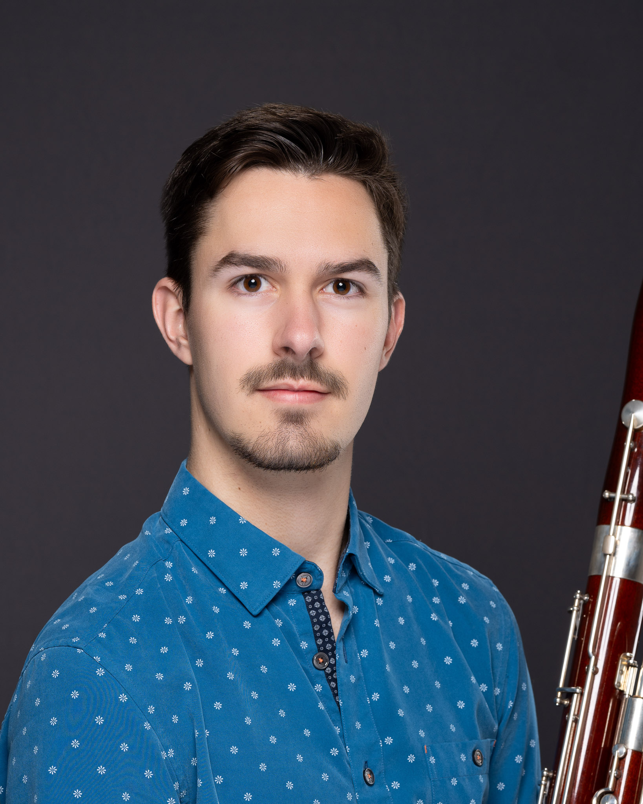

Wolfgang Scheitinger

A rennaisance man at heart, Wolfgang Scheitinger is an incredibly quick learner who applies himself and his positive attitude towards everything he does. Whether is be web development, music, system administration, or ultimate frisbee, he is sure to be found with a determined look in his eyes and a smile on his face.
Education
Artist Diploma - The Glenn Gould School at The Royal Conservatory of Music
- September 2023 - May 2025
- Majored in Bassoon Performance
- Served as principal bassoon for the orchestra's Carnegie Hall debut
BMus - State University of New York at Fredonia
- August 2019 - May 2023
- Majored in Bassoon Performance & Music Composition
- 3.99 GPA
Work experience
IT Specialist II - NYSED
- October 2025 - Present
- Served as M365 Admin on the Shared Platform Services Team
- Implemented Teams Phones Systems for over 3,000 employees across state
- Developed Powershell scripts to automate daily tasks
Tech Lab Assistant - The Royal Conservatory of Music
- September 2024 - May 2025
- Monitored and maintained daily operations of the tech lab during peak usage hours, ensuring
optimal system functionality and user access.
- Provided hands-on technical support to students and staff, resolving hardware, software, A V
equipment, and network connectivity issues in a timely manner.
Level 2 Technician - State University of New York at Fredonia
- January 2021 - August 2023
- Serviced computers, laptops, smart devices, tablets, phones, and printers for faculty and students
from both a hardware and software standpoint. Installed wireless access points across the campus.
- Updated and deployed macOS and Windows images on state-owned desktops.
- Guided customers with networking and computer troubleshooting in person, over the phone and
through email. Wrote Confluence articles to provide instructions for recurring issues.
Skills
- Python
- Powershell
- Web Development
- AWS
- M365 Administration
Awards, certifications, or other achievements (list any relevant awards, certifications, or other accomplishments)
- CEO of scheitingermusic.com
- 95th percentile on NY Civil Service Exam